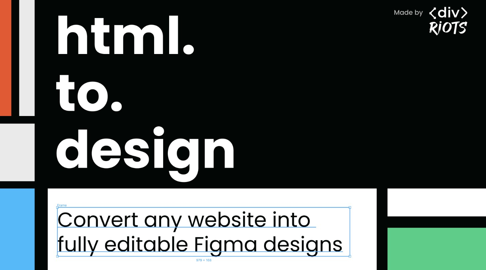

Claude + Figma
Estou estudando como usar o Claude junto com o Figma para manter a mesma linguagem visual entre telas e projetos: criar Design Systems no Figma e trazer telas feitas em código de volta para o Figma com o html.to.design.
O fluxo que estou testando
Design System no Figma→Claude gera as telas→html.to.design→de volta ao Figma
O Design System guarda as decisões: cores, tipografia, espaçamentos e componentes. O Claude usa essas regras para montar telas novas, e o html.to.design importa essas telas para o Figma como camadas editáveis. Assim eu continuo o projeto no Figma sem perder a consistência e sem redesenhar tudo à mão.

html.to.designPlugin do Figma que transforma páginas HTML em camadas editáveis. Feito pela divRIOTS. html.to.design ↗Por que isso importa
- Telas novas já nascem com os mesmos componentes e estilos das anteriores.
- O mesmo sistema pode ser reaproveitado de um projeto para outro.
- Sobra mais tempo para pensar na experiência e menos para repetir trabalho.
O que já testei
- Montar um Design System no Figma e usar como base para gerar telas com o Claude.
- Importar telas em HTML para o Figma com o html.to.design e seguir editando a partir delas.
- Este portfólio: vetorizei desenhos feitos à mão (os ícones do dock e o Bidu vieram do meu caderno) e transformei um wireframe em site navegável.
Também estudo UX por conta própria
Faço cursos online de User Experience para aprofundar arquitetura de informação, Design Systems e usabilidade, e levo o que aprendo direto para os projetos.
em andamento Experiência do Usuário: Da Estratégia à Prática Coesão e Experiência do UsuárioArquitetura da Informação e Design SystemCanais e Componentes do Design SystemPrática de Design SystemHeurísticas Aplicadas à ConversaPrincípios do Design ConversacionalFluxos Macro e MicroEcossistema de Canais e ComponentesDesign Conversacional com IA academy.blip.ai ↗